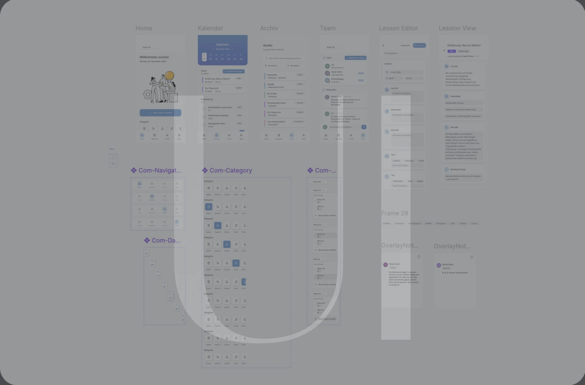
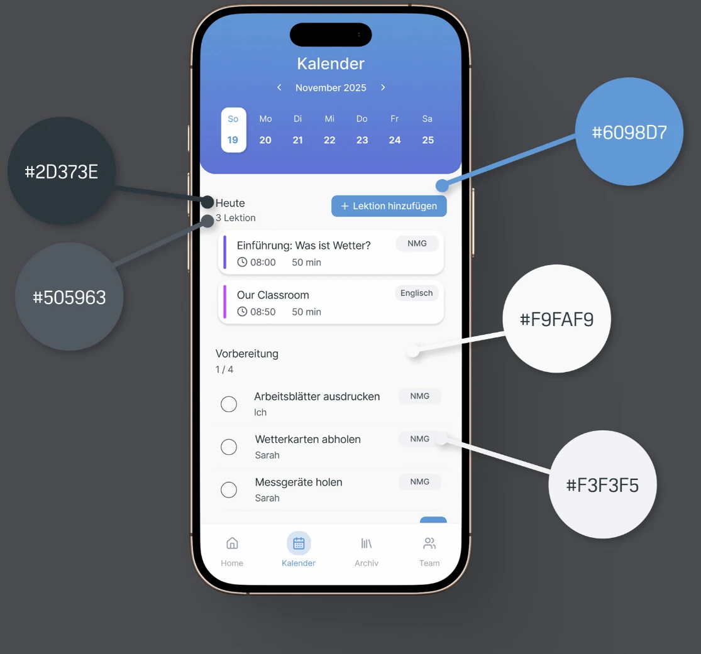
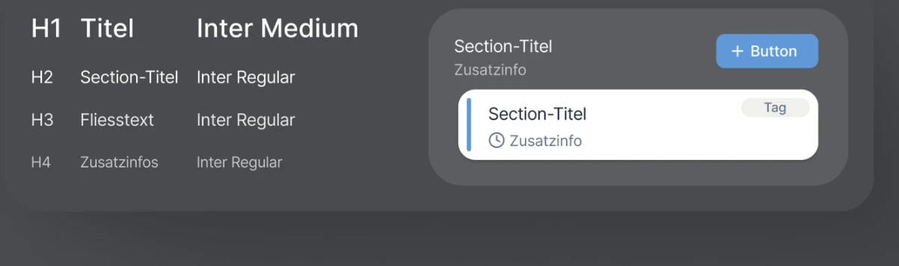
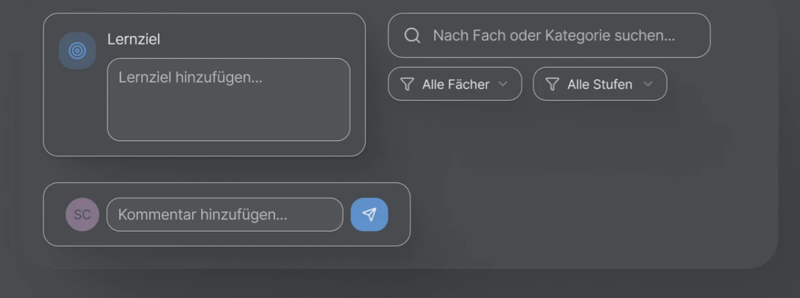
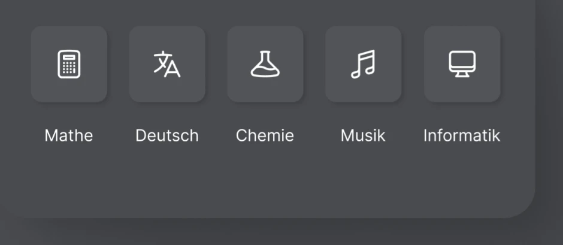
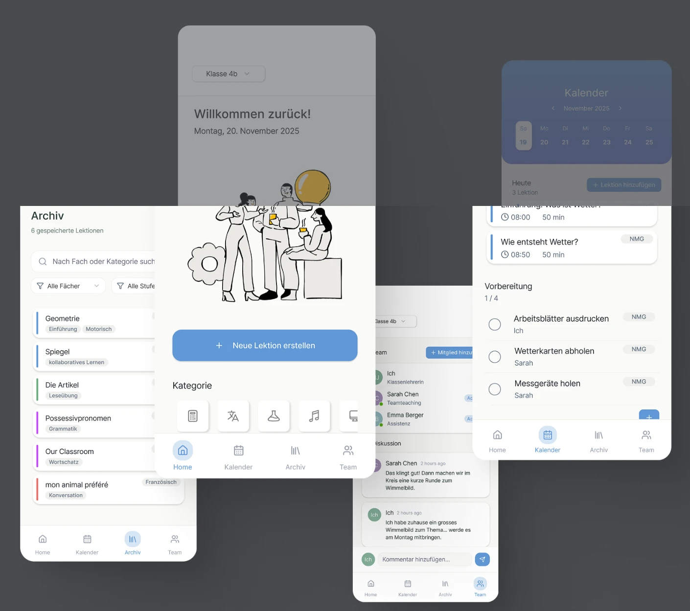
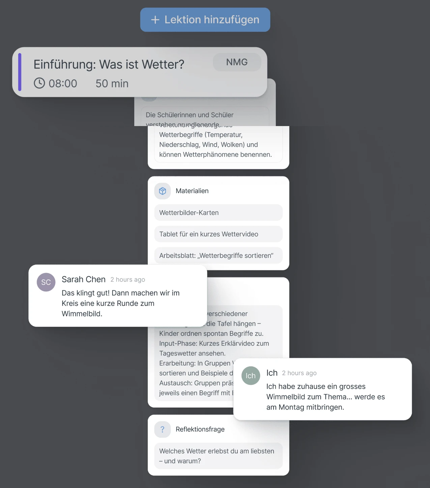
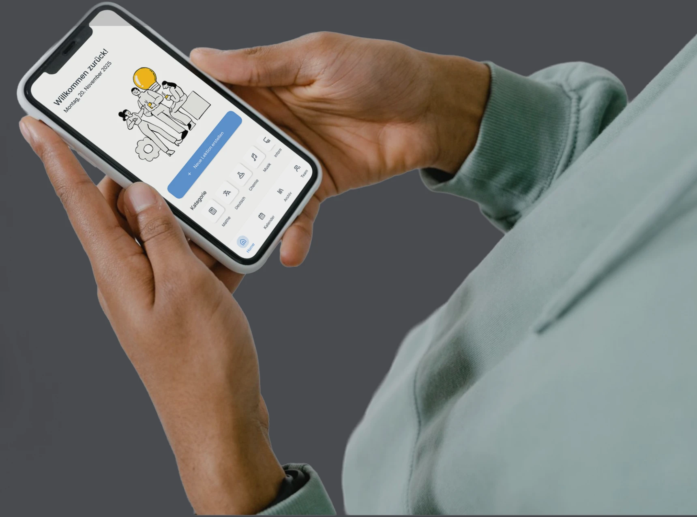

Personal Project · 2025
Lesson Flow
UI/UX Design · Frontend Development
Projektidee
Dieses persönliche Projekt konzentriert sich auf die Gestaltung eines modernen, mobilen Interfaces für die kollaborative Unterrichts- und Lektionsplanung. Der visuelle Fokus lag auf einer klaren, reduzierten Designsprache. Mithilfe von Figma entstand ein High-Fidelity-Prototyp, der Layout, Typografie, Farbkonzept und Interaktionsideen anschaulich darstellt und den Mobile-First-Ansatz des Projekts unterstreicht.
Ergänzend zum Design wurde ein Teil der Anwendung technisch umgesetzt. Mit Vue.js entstand ein funktionsfähiges CRUD-System, mit dem Lektionen erstellt, bearbeitet und gelöscht werden können. Der Code zeigt die Struktur hinter dieser Vue.js-App.
Visual Design
Erstellt in Figma

Farbwelt
Ruhig mit markanten Akzenten
für Struktur und Orientierung.

Typografie
Klare Hierarchie für gute Lesbarkeit.

Interaktive Elemente
Intuitive Interfaces für Interaktionen.

Ikonografie
Minimalistische Icons zur Orientierung.

Navigation
Klare Nutzerführung,
ohne zu überfordern.


Unterrichtsteams verbinden
Gemeinsam planen, Ideen teilen und Vorbereitung smart koordinieren – alles vereint in einer Plattform.
